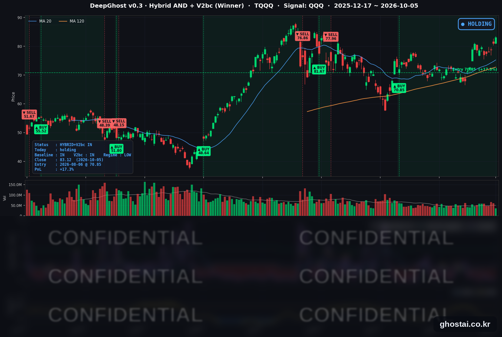

ISM 서비스업 지수 3년내 최고
· Ghost.AI 데일리 리포트
👻 매일 시그널과 히스토리를 홈페이지에서 한눈에 → www.ghostai.co.kr
회원 페이지 안내 — 회원 가입하시면 커버리지 전 종목의 원본 시그널과 분석 레포트를 매일 확인하실 수 있습니다. 회원 페이지는 블로그·유튜브보다 먼저 업데이트됩니다. 선착순 100명을 모집하고 있으며, 이메일과 필명만으로 가입하실 수 있고 서비스 사용료는 받지 않습니다. 가입 신청 후 운영자 승인을 거쳐 이용하실 수 있습니다.
9월 ISM 서비스업 가격지수가 74.0으로 2022년 7월 이후 가장 높게 나왔습니다. 서비스 부문의 물가 압력이 커지고 있다는 해석에 10년물 금리는 5.311%로 올해 최고 종가를 다시 넘었고, 금리에 민감한 주택건설주는 5종목이 모두 내렸습니다. 지수는 AI 관련 대형주가 이끌어 나스닥 종합(+1.05%)이 9월 22일 이후 처음 사상 최고 종가를 경신했고, 나스닥100(QQQ)도 2거래일 연속 최고 종가를 기록했습니다. TQQQ는 2.60% 올랐고, 전략 수익률은 +17.32%로 8월 6일 진입 이후 가장 높아졌습니다.
📊 오늘의 매매 신호
| 항목 | 내용 |
|---|---|
| 오늘 할 일 | ✅ 아무것도 안 해도 됩니다 |
| 포지션 상태 | 📈 TQQQ 보유 중 (IN POSITION) |
| 매수 진입일 | 2026-08-06 (42거래일째) |
| 진입가 → 현재가 | $70.85 → $83.12 |
| 현재 포지션 수익 | +17.32% |
TQQQ 시그널 — IN POSITION
현재 상태: 매수 포지션 유지 중 | 이번 포지션 수익 +17.32%

QQQ가 +0.88% 오르면서 TQQQ는 +2.60% 오른 83.12달러로 마감했습니다. 전략의 평가수익률은 전 거래일 +14.34%에서 +17.32%로 늘어 8월 6일 진입 이후 가장 높습니다. 진입 후 42거래일 중 수익률이 가장 낮았던 날은 9월 15일(-4.16%)이었습니다. 오늘 새 신호는 없었고, 모델 기준으로 매도 신호까지의 여유는 전일과 비슷합니다.
8월 6일 진입 이후 10년물 금리는 4.670%에서 5.311%로 64bp 올랐고, 같은 기간 QQQ 종가도 714.65달러에서 756.20달러로 5.8% 올랐습니다. 모델은 금리 수준이 아니라 나스닥100의 가격 흐름으로 판단하므로, 금리가 오르는 동안에도 지수가 함께 오르면서 보유가 이어졌습니다. TQQQ 종가는 사상 최고 종가(6월 2일, 87.22달러)보다 4.70% 낮아, 10월 2일(-7.12%)보다 차이가 줄었습니다.
오늘 미국 시장 — 시황 요약
지수 마감
| 지수 | 종가 | 등락률 | 사상 최고 종가 대비 |
|---|---|---|---|
| S&P 500 | 7,773.95 | +0.66% | -0.32% (8/13) |
| 나스닥 종합 | 27,477.31 | +1.05% | 사상 최고 |
| 다우존스 | 51,267.90 | +0.18% | -5.67% (8/5) |
| IWM (러셀 2000 ETF) | 283.38 | +0.66% | -7.12% (8/14) |
| QQQ (나스닥100) | 756.20 | +0.88% | 사상 최고 |
| TQQQ | 83.12 | +2.60% | -4.70% (6/2) |
QQQ는 전일 종가 부근에서 출발했고 상승분은 정규장에서 나왔습니다. 시가 갭에서 대부분 오른 10월 2일과 다른 흐름입니다. S&P 500 구성종목 499개 중 313개(62.7%)가 올랐습니다. 나스닥 종합은 9월 22일의 사상 최고 종가(27,244.28)를 넘었고, QQQ는 10월 2일(749.58달러)에 이어 다시 최고 종가를 기록했습니다. 다우는 머크(-3.30%)·세일즈포스(-2.09%)가 내려 상승 폭이 가장 작았습니다.
국채 금리 동향
| 만기 | 수익률 | 전 거래일 대비 |
|---|---|---|
| 3개월 | 4.018% | +2.5bp |
| 2년 (재무부 공시) | 4.84% | +1bp |
| 5년 | 5.066% | +1.1bp |
| 10년 | 5.311% | +3.4bp |
| 30년 | 5.665% | +3.5bp |
10년물과 30년물이 2002년 이후 가장 높은 종가로 마감했습니다. 10년물 5.311%는 2002년 4월, 30년물 5.665%는 2002년 5월 이후 가장 높은 종가이고, 둘 다 9월 30일의 올해 최고 종가(5.293%·5.638%)를 넘었습니다. 10년물은 올해 들어 114.8bp 올랐습니다. 장 시작 전부터 프랑스 재정·정치 불안으로 유럽 국채 금리가 오르는 흐름이 이어졌고, 오전 10시에는 ISM 서비스업 가격지수가 2022년 7월 이후 최고치로 나왔습니다.
5년물보다 10년·30년물이 더 많이 올라 장기 구간이 가팔라졌습니다. 재무부 기준 2년물과 10년물의 차이는 45bp에서 47bp로, 10년물과 3개월물의 차이는 128.4bp에서 129.3bp로 벌어졌고 역전은 없습니다. 9월 고용이 2.9만 명 증가에 그친 뒤에도 장기 금리가 오르고 있어, 채권 시장은 경기 둔화보다 물가와 재정 부담을 더 크게 반영하고 있다는 해석이 나옵니다. 금리에 민감한 주택건설 5종목은 모두 내렸고(중간값 -1.31%), 리츠 26종목 중 16종목이 내렸습니다.
연준 발언 & 금리 패스
- 10월 5일: 연준 이사회 일정표에 이사 연설이 없었고, 연준 위원의 공개 발언도 확인되지 않았습니다.
- 로건(Logan) 댈러스 연은 총재 (10/1): 9월 인상을 "첫걸음"이라고 부르며 추가 인상이 필요할 가능성이 높다고 했습니다.
- 윌리엄스(Williams) 뉴욕 연은 총재 (9/30 보도): 9월 결정으로 서두를 필요가 없어졌다고 하면서, 연말께 한 차례 추가 인상이 적절할 수 있다고 했습니다.
- 카시카리(Kashkari) 미니애폴리스 연은 총재·제퍼슨(Jefferson) 부의장 (10/1): 카시카리 총재는 10월 인상에 강한 견해가 없다고 했고, 제퍼슨 부의장은 데이터를 보고 결정하겠다고 했습니다.
추가 인상 가능성은 열어 두되 10월에 서두르지는 않겠다는 내용이어서 시장 해석은 중립입니다. 금리선물에 반영된 10월 27~28일 FOMC 인상 확률은 20%대 초반으로 보도됐습니다. 연준은 9월 16일 정책금리를 3.75~4.00%로 올렸습니다. 이날 ISM 가격지수로 물가 압력이 계속되고 있다는 것이 확인된 만큼, 10월 7일 공개되는 9월 회의 의사록과 10월 14일 9월 CPI가 12월 인상 여부를 가늠할 다음 자료입니다.
오늘의 핵심 이슈
- 9월 ISM 서비스업 가격지수 74.0. 서비스업 PMI는 54.9로 8월(55.4)보다 낮아졌지만 27개월 연속 확장했습니다. 가격지수는 72.6에서 74.0으로 올라 2022년 7월 이후 가장 높았고, 고용지수는 50.1로 확장 구간(50 이상)으로 돌아왔습니다. 응답 기업들은 연료비·관세·원자재 가격을 주요 부담으로 꼽았습니다.
- 나스닥 종합·QQQ·엔비디아 사상 최고 종가. 엔비디아는 2.12% 오른 238.90달러로 5월 14일(235.74달러) 이후 처음 사상 최고 종가를 경신했습니다. 메타(+1.90%)·마이크로소프트(+1.48%)·테슬라(+2.20%)도 올랐습니다. 반면 인텔은 일론 머스크가 칩 제조 프로젝트 테라팹(Terafab)과 TSMC의 협의를 확인하면서 2.63% 내렸습니다. 인텔은 그동안 테라팹의 칩 파트너로 거론돼 왔습니다.
- 대형 인수 발표 두 건. 슈나이더 일렉트릭이 설계 소프트웨어 업체 PTC를 주당 205달러 전액 현금(지분가치 약 226억 달러, 10월 2일 종가 대비 42.3% 프리미엄)에 인수한다고 발표하자 PTC는 33.49% 오른 192.26달러로 마감했습니다. 같은 업종의 오토데스크도 4.51% 올랐습니다. 반대로 물류 중개업체 C.H. 로빈슨은 경쟁사 RXO를 58억 달러에 인수한다고 발표한 뒤 10.85% 내렸습니다. 약 30억 달러의 신규 차입과 자사주 매입 중단이 부담으로 꼽혔습니다.
변동성 & 투자심리
VIX는 15.31에서 15.52로 1.37% 올라, S&P 500이 오른 날 함께 올랐습니다. CNN 공포탐욕지수는 전 거래일 31.2에서 43.1로 올랐지만 아직 "공포" 구간입니다(1주 전 34.4, 한 달 전 45.2). 7개 구성 지표 중 주가 강도와 시장 폭은 극단적 공포, 하이일드 채권 수요는 극단적 탐욕입니다. 나스닥과 QQQ가 사상 최고 종가를 기록하고 상승 종목도 60%를 넘었지만, 장기 금리와 VIX가 함께 올라 전반적인 심리는 중립에 가깝습니다.
매크로 & 원자재
| 품목 | 종가 | 등락률 |
|---|---|---|
| WTI 원유 | $89.30 | -1.99% |
| 브렌트유 | $100.32 | -1.89% |
| 원유 ETF (USO) | $143.99 | -2.29% |
| 금 ETF (GLD) | $379.55 | -0.16% |
- 원유 하락: OPEC+ 핵심 7개국은 10월 4일 11월 생산 목표를 동결했습니다. 중동산 원유 수출이 늘었고 G7의 비축유 1억 배럴 방출 합의(10/2)까지 더해져 공급 부담이 커졌다는 보도가 나왔습니다. 후티 반군은 사우디 아람코 시설을 공격했다고 주장했지만 사우디는 확인하지 않았습니다.
- 유럽 채권: 프랑스 재정·정치 불안으로 유럽 국채 금리 상승이 이어졌고, 유로화는 달러 대비 약 17개월 만의 최저 수준까지 내렸습니다.
주요 종목 동향
| 종목 | 종가 | 등락률 | 비고 |
|---|---|---|---|
| TSLA | 378.73 | +2.20% | 5거래일 +5.95% |
| NVDA | 238.90 | +2.12% | 사상 최고 종가 (이전 5/14, 235.74) |
| AVGO | 362.51 | +2.08% | |
| META | 741.90 | +1.90% | |
| MSFT | 525.18 | +1.48% | |
| GOOGL | 346.47 | +0.86% | |
| NFLX | 67.50 | +0.66% | |
| AMZN | 251.40 | -0.05% | |
| AAPL | 332.89 | -0.24% | |
| MU | 1,063.96 | -1.02% | |
| QCOM | 180.79 | -2.21% | 5거래일 -3.57% |
| INTC | 116.19 | -2.63% | 머스크, 테라팹-TSMC 협의 확인 |
커버리지 12종목 중 7종목이 오르고 5종목이 내렸습니다. 반도체 안에서는 방향이 갈려 엔비디아·브로드컴은 2% 넘게 올랐고 인텔·퀄컴·마이크론은 내렸습니다. 플랫폼 대형주는 테슬라·메타·마이크로소프트가 강했고 애플·아마존은 약보합이었습니다.
다음 일정 (미 동부시간)
- 10/6(화) 08:30 8월 무역수지 / 10:45 보우먼(Bowman) 감독 부의장 연설 (규제·감독) / 13:00 3년물 국채 입찰 (580억 달러)
- 10/7(수) 14:00 9월 FOMC 의사록 / 10년물 국채 입찰 (390억 달러)
- 10/8(목) 04:30 월러(Waller) 이사 연설 (경제 전망) / 30년물 국채 입찰 (220억 달러) / 펩시코 실적
- 10/9(금) 10:00 미시간대 소비자심리 (예비) / 델타항공 실적
- 이후 10/12(월) 콜럼버스 데이 — 채권 시장 휴장, 주식 시장 정상 개장 / 10/14 9월 CPI·베이지북 / 10/15 9월 PPI·소매판매 / 10/27~28 FOMC
Ghost.AI — Quantitative AI Investment
Model: DeepGhost v0.3 | Transformer-Based Deep Learning
Coverage: 13 tickers | Updated every trading day after US market close
⚠️ 본 자료는 정보 제공 목적으로만 작성되었으며 투자 권유가 아닙니다. 모든 투자의 책임은 투자자 본인에게 있습니다. 과거 성과가 미래 수익을 보장하지 않습니다.
[유의사항]
- 본 서비스는 불특정 다수를 대상으로 발행되는 단방향 정보 제공 서비스이며, 투자자 개인의 재산 상황·투자 목적·위험 선호도를 반영한 개별 투자 조언이 아닙니다.
- 고스트에이아이 주식회사는 고객과 쌍방향 의사소통(개별 상담, 맞춤형 자문 등)을 제공하지 않습니다.
- 본 콘텐츠는 투자 권유 또는 매매 주문의 청약·청약의 권유에 해당하지 않으며, 최종 투자 판단 및 그에 따른 손익의 책임은 전적으로 투자자 본인에게 있습니다.
고스트에이아이 주식회사